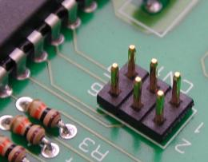
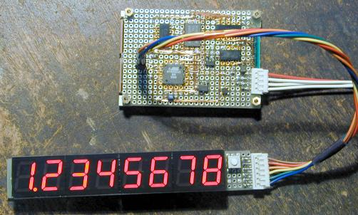

AVR microcontroller family have ISP (In-System Programming) feature. In general, the AVR boards have an ISP connector. It outs only three I/O pins, reset pin, VCC and GND, it is not that any exclusive function pin is used. Therefore, the ISP connector can be used for any other purpose at normal operation.
Because the ISP function and I/O port share the same pins, the pins may be used for any other function on the board. In this case, the ISP connector will not able to be used for the different use reported here. However, the ISP pins are usually free when there is a margin of number of I/O pins.
If there are three free I/O pins, it will be used for many effective use, so that the ISP connector should be used more. It will interesting to think about various application of the ISP connector. Now, I report some usage that I am actually applying.
Using a communication port for debugging
This usage may not effective for ICE usrs :-) It can be used to debug via the ISP connector if external circuits are working correctly.
At the first, program a simple debug monitor that is known it certainly work. It can be controlled with any terminal attached to the ISP connecter with an ISP cable. Therefore, it can controll the I/O registers and the integrated peripherals with ease.
There are troubles until the function of external peripherals is confirmed after borad assembly is finished. This feature that can check the function of external peripherals is very useful for debugging of the external peripherals.
AVR DEBUG MONITOR
O<pa><d> - Output port
I<pa> - Input port
IR<pa> - Input port until break
D[<sa>] - Dump memory
E<sa>[<d>] - Edit memory
F<sa><ea><d> - Fill memory
%
The sample AVR debug monitor is same as the program which has been reported in the "Simple AVR programmers". When use it on the AT90S8515, it can be used without any changes, the baud rate is 38.4 kbps at 8 MHz. If you wish to use it on the any other devices or different bit rate, change device definitions in the source code.
Start any terminal program after the debug monitor is programmed, the reset signal will be released (ER is active) and then the debug monitor starts and will send initial message for console. You can manipurate integrated peripherals and data memory with debugging commands.
AVR debug monitor for AVR-ISP (ASM)
Software UART samples (GCC)
The target program which being debugged will able to use the serial communication feature via the ISP cable. However, the software implemented UART generates its communication timing with software loop, so that the reveiving routine disables interruputs until next character is received. Therefore, the software implemented UART halts interrupt driven tasks.
However, only the transmisson routines can be used with no influence on the interrupt driven tasks because it disables all interrupts during transmission process. For example, when an interrupt task is driven in 1 msec interval timer, 38.4 kbps transmission routine which transmits a character in 0.26 msec can be used. It will help debug very much because internal variables can be monitered with a console in real-time.
Attaching an LED display

This is an eight digits numeric LED display which is controlled only three I/O lines. It has shift registers to hold display data, the display data is transferred in clocked serial transfering.
It will also useful for on-board display circuit when number of I/O pin is insufficient.
Using connector as jumper pins

At the practical work, the ISP connecter is useless. But it will be used as two bits of jumper switch.
To use it as a jumper switch, initialize MOSI and MISO as input with internal pull-up and make low SCK, and then read input level of MOSI and MISO.

{kind=link}